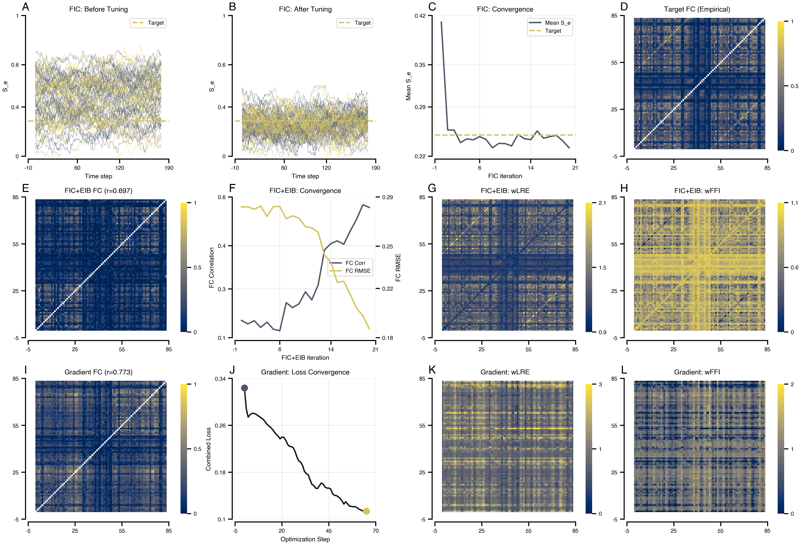

import os
os.environ["XLA_FLAGS"] = "--xla_force_host_platform_device_count=8"
from tvbo import SimulationExperiment
import matplotlib.pyplot as plt
import numpy as np
# Load experiment (network + target FC loaded from BIDS automatically)
exp = SimulationExperiment.from_file(
"../../../database/experiments/EI_Tuning_FIC_EIB_Optimization.yaml"
)
print(exp.render_code('tvboptim'))Excitation-Inhibition Balance Tuning via tvboptim
Reproducing the FIC+EIB tuning workflow from Schirner et al. (2023). Fits local inhibitory weights (J_i) for E-I balance and dual coupling weights (wLRE, wFFI) to match empirical functional connectivity.
results = exp.run("tvboptim")
============================================================
STEP 1: Running simulation...
============================================================
Simulation period: 300000.0 ms, dt: 4.0 ms
Transient period: 300000.0 ms
Simulation complete.
============================================================
STEP 3: Running algorithms...
============================================================
Algorithms to run (dependency order): ['fic', 'fic_eib']
\n>>> Running algorithm: fic (seed=0)
Running fic algorithm for 200 iterations...
10/200: mean_S_e=0.2573, mean_S_i=0.0906, bold=0.9095
20/200: mean_S_e=0.2573, mean_S_i=0.0917, bold=0.8454
30/200: mean_S_e=0.2393, mean_S_i=0.0846, bold=0.7678
40/200: mean_S_e=0.2447, mean_S_i=0.0868, bold=0.7933
50/200: mean_S_e=0.2433, mean_S_i=0.0869, bold=0.8126
60/200: mean_S_e=0.2479, mean_S_i=0.0857, bold=0.8491
70/200: mean_S_e=0.2438, mean_S_i=0.0876, bold=0.8279
80/200: mean_S_e=0.2321, mean_S_i=0.0822, bold=0.7855
90/200: mean_S_e=0.2383, mean_S_i=0.0839, bold=0.7930
100/200: mean_S_e=0.2379, mean_S_i=0.0828, bold=0.7978
110/200: mean_S_e=0.2346, mean_S_i=0.0840, bold=0.8119
120/200: mean_S_e=0.2509, mean_S_i=0.0876, bold=0.8327
130/200: mean_S_e=0.2449, mean_S_i=0.0848, bold=0.8166
140/200: mean_S_e=0.2436, mean_S_i=0.0858, bold=0.7963
150/200: mean_S_e=0.2560, mean_S_i=0.0881, bold=0.8101
160/200: mean_S_e=0.2456, mean_S_i=0.0851, bold=0.8204
170/200: mean_S_e=0.2479, mean_S_i=0.0877, bold=0.7800
180/200: mean_S_e=0.2497, mean_S_i=0.0880, bold=0.8311
190/200: mean_S_e=0.2417, mean_S_i=0.0857, bold=0.7961
200/200: mean_S_e=0.2319, mean_S_i=0.0822, bold=0.8276
fic complete!
\n>>> Running algorithm: fic_eib (seed=0)
(using state from dependency: fic)
Using passed bold buffer (200 samples, using last 150)
Running fic_eib algorithm for 2000 iterations...
100/2000: fc_corr=0.1310, fc_rmse=0.2781, mean_S_e=0.2407, mean_S_i=0.0834, bold=0.8087, fc_inloop=0.0205
200/2000: fc_corr=0.1429, fc_rmse=0.2762, mean_S_e=0.2384, mean_S_i=0.0842, bold=0.8519, fc_inloop=0.0213
300/2000: fc_corr=0.1182, fc_rmse=0.2785, mean_S_e=0.2619, mean_S_i=0.0899, bold=0.8657, fc_inloop=0.0211
400/2000: fc_corr=0.1374, fc_rmse=0.2712, mean_S_e=0.2551, mean_S_i=0.0874, bold=0.8331, fc_inloop=0.0285
500/2000: fc_corr=0.1113, fc_rmse=0.2782, mean_S_e=0.2562, mean_S_i=0.0894, bold=0.8266, fc_inloop=0.0221
600/2000: fc_corr=0.1057, fc_rmse=0.2782, mean_S_e=0.2584, mean_S_i=0.0885, bold=0.8629, fc_inloop=0.0234
700/2000: fc_corr=0.2093, fc_rmse=0.2696, mean_S_e=0.2687, mean_S_i=0.0898, bold=0.8784, fc_inloop=0.0288
800/2000: fc_corr=0.1912, fc_rmse=0.2716, mean_S_e=0.2496, mean_S_i=0.0841, bold=0.8270, fc_inloop=0.0263
900/2000: fc_corr=0.2053, fc_rmse=0.2700, mean_S_e=0.2509, mean_S_i=0.0847, bold=0.8864, fc_inloop=0.0262
1000/2000: fc_corr=0.2494, fc_rmse=0.2639, mean_S_e=0.2555, mean_S_i=0.0858, bold=0.8516, fc_inloop=0.0313
1100/2000: fc_corr=0.2198, fc_rmse=0.2630, mean_S_e=0.2756, mean_S_i=0.0894, bold=0.9206, fc_inloop=0.0352
1200/2000: fc_corr=0.2754, fc_rmse=0.2599, mean_S_e=0.2578, mean_S_i=0.0821, bold=0.8482, fc_inloop=0.0357
1300/2000: fc_corr=0.4046, fc_rmse=0.2435, mean_S_e=0.2590, mean_S_i=0.0826, bold=0.8869, fc_inloop=0.0479
1400/2000: fc_corr=0.4282, fc_rmse=0.2386, mean_S_e=0.2934, mean_S_i=0.0915, bold=0.9964, fc_inloop=0.0512
1500/2000: fc_corr=0.4379, fc_rmse=0.2243, mean_S_e=0.2675, mean_S_i=0.0847, bold=0.8706, fc_inloop=0.0692
1600/2000: fc_corr=0.4252, fc_rmse=0.2252, mean_S_e=0.2790, mean_S_i=0.0873, bold=0.9256, fc_inloop=0.0707
1700/2000: fc_corr=0.4736, fc_rmse=0.2158, mean_S_e=0.2757, mean_S_i=0.0853, bold=0.9244, fc_inloop=0.0799
1800/2000: fc_corr=0.5174, fc_rmse=0.2060, mean_S_e=0.2606, mean_S_i=0.0809, bold=0.7845, fc_inloop=0.0882
1900/2000: fc_corr=0.5715, fc_rmse=0.2006, mean_S_e=0.2486, mean_S_i=0.0773, bold=0.8469, fc_inloop=0.0907
2000/2000: fc_corr=0.5612, fc_rmse=0.1913, mean_S_e=0.2381, mean_S_i=0.0723, bold=0.7224, fc_inloop=0.1046
fic_eib complete!
============================================================
Algorithms complete. Results: ['fic', 'fic_eib']
============================================================
============================================================
STEP 4: Running optimization...
============================================================
Preparing optimization model (t1=300000.0ms, dt=4.0ms, solver=Heun)
Step 0: 0.323819
Step 1: 0.287817
Step 2: 0.274085
Step 3: 0.278268
Step 4: 0.280464
Step 5: 0.280446
Step 6: 0.279260
Step 7: 0.277225
Step 8: 0.274855
Step 9: 0.272703
Step 10: 0.270251
Step 11: 0.266524
Step 12: 0.261954
Step 13: 0.259123
Step 14: 0.256596
Step 15: 0.252917
Step 16: 0.248507
Step 17: 0.244543
Step 18: 0.241554
Step 19: 0.237032
Step 20: 0.239891
Step 21: 0.239685
Step 22: 0.234856
Step 23: 0.227783
Step 24: 0.224228
Step 25: 0.223848
Step 26: 0.221952
Step 27: 0.215661
Step 28: 0.206034
Step 29: 0.199305
Step 30: 0.197315
Step 31: 0.191677
Step 32: 0.181581
Step 33: 0.177735
Step 34: 0.175866
Step 35: 0.167351
Step 36: 0.159381
Step 37: 0.157341
Step 38: 0.152918
Step 39: 0.152308
Step 40: 0.157470
Step 41: 0.161631
Step 42: 0.159809
Step 43: 0.154668
Step 44: 0.153070
Step 45: 0.153082
Step 46: 0.151430
Step 47: 0.143376
Step 48: 0.140794
Step 49: 0.140237
Step 50: 0.138376
Step 51: 0.135317
Step 52: 0.131470
Step 53: 0.125828
Step 54: 0.129819
Step 55: 0.126077
Step 56: 0.122429
Step 57: 0.121797
Step 58: 0.121222
Step 59: 0.121485
Step 60: 0.119737
Step 61: 0.117430
Step 62: 0.115783
Step 63: 0.114292
Step 64: 0.114368
Step 65: 0.113907
Optimization complete.
============================================================
Experiment complete.
============================================================Results
import bsplot
cmap = plt.cm.cividis
accent_blue = cmap(0.3)
accent_gold = cmap(0.85)
accent_mid = cmap(0.6)
# Get FC matrices from result structure (observations attached to simulation results)
fc_target = np.array(results.integration.observations.fc_target)
fc_post_fic = np.array(results.fic.post_tuning.observations.fc)
fc_post_fic_eib = np.array(results.fic_eib.post_tuning.observations.fc)
fc_gradient = np.array(results.gradient_eib.simulation.observations.fc)
# FC correlations from post-tuning observations
corr_post_fic = float(results.fic.post_tuning.observations.fc_corr)
corr_fic_eib = float(results.fic_eib.post_tuning.observations.fc_corr)
corr_gradient = float(results.gradient_eib.simulation.observations.fc_corr)
# 3 rows x 4 columns layout
mosaic = "AABBCCDD\nEEFFGGHH\nIIJJKKLL"
fig, axes = plt.subplot_mosaic(mosaic, figsize=(16, 12), layout="compressed")
# =============================================================================
# ROW 1: FIC Algorithm Results (Local E-I Balance Tuning)
# =============================================================================
# Number of time steps to show (720ms / 4ms dt = 180, matching original)
n_display = 180
# A: S_e Before FIC
ax = axes["A"]
data = np.array(results.fic.pre_tuning.data[:n_display, 0, :])
for i in range(data.shape[1]):
ax.plot(data[:, i], color=cmap(i / data.shape[1]), lw=0.5, alpha=0.6)
ax.axhline(0.25, color=accent_gold, ls="--", lw=2, label="Target")
ax.set(xlabel="Time step", ylabel="S_e", title="FIC: Before Tuning")
ax.set_ylim(0, 1)
ax.legend(loc="upper right")
# B: S_e After FIC
ax = axes["B"]
data = np.array(results.fic.post_tuning.data[:n_display, 0, :])
for i in range(data.shape[1]):
ax.plot(data[:, i], color=cmap(i / data.shape[1]), lw=0.5, alpha=0.6)
ax.axhline(0.25, color=accent_gold, ls="--", lw=2, label="Target")
ax.set(xlabel="Time step", ylabel="S_e", title="FIC: After Tuning")
ax.set_ylim(0, 1)
ax.legend(loc="upper right")
# C: FIC Convergence (Mean S_e over iterations)
ax = axes["C"]
ax.plot(
np.array(results.fic.history.mean_S_e), lw=2, color=accent_blue, label="Mean S_e"
)
ax.axhline(0.25, color=accent_gold, ls="--", lw=2, label="Target")
ax.set(xlabel="FIC iteration", ylabel="Mean S_e", title="FIC: Convergence")
ax.legend(loc="upper right")
ax.grid(True, alpha=0.3)
# D: FC Target (empirical)
ax = axes["D"]
np.fill_diagonal(fc_target, np.nan)
im = ax.imshow(fc_target, cmap="cividis", vmin=0, vmax=1)
ax.set(title="Target FC (Empirical)")
plt.colorbar(im, ax=ax, fraction=0.046)
# =============================================================================
# ROW 2: FIC+EIB Combined Algorithm Results
# =============================================================================
# E: FC after FIC+EIB
ax = axes["E"]
np.fill_diagonal(fc_post_fic_eib, np.nan)
im = ax.imshow(fc_post_fic_eib, cmap="cividis", vmin=0, vmax=1)
ax.set(title=f"FIC+EIB FC (r={corr_fic_eib:.3f})")
plt.colorbar(im, ax=ax, fraction=0.046)
# F: FIC+EIB Convergence (FC correlation)
ax = axes["F"]
ax2 = ax.twinx()
(l1,) = ax.plot(
np.array(results.fic_eib.history.fc_corr), lw=2, color=accent_blue, label="FC Corr"
)
(l2,) = ax2.plot(
np.array(results.fic_eib.history.fc_rmse), lw=2, color=accent_gold, label="FC RMSE"
)
ax.set(
xlabel="FIC+EIB iteration", ylabel="FC Correlation", title="FIC+EIB: Convergence"
)
ax2.set_ylabel("FC RMSE")
ax.legend(handles=[l1, l2], loc="center right")
ax.grid(True, alpha=0.3)
# G: FIC+EIB wLRE
ax = axes["G"]
wLRE = np.array(results.fic_eib.state.coupling.EIBLinearCoupling.wLRE)
im = ax.imshow(wLRE, cmap="cividis")
ax.set(title="FIC+EIB: wLRE")
plt.colorbar(im, ax=ax, fraction=0.046)
# H: FIC+EIB wFFI
ax = axes["H"]
wFFI = np.array(results.fic_eib.state.coupling.EIBLinearCoupling.wFFI)
im = ax.imshow(wFFI, cmap="cividis")
ax.set(title="FIC+EIB: wFFI")
plt.colorbar(im, ax=ax, fraction=0.046)
# =============================================================================
# ROW 3: Gradient-Based Optimization Results
# =============================================================================
# I: FC after Gradient Optimization
ax = axes["I"]
np.fill_diagonal(fc_gradient, np.nan)
im = ax.imshow(fc_gradient, cmap="cividis", vmin=0, vmax=1)
ax.set(title=f"Gradient FC (r={corr_gradient:.3f})")
plt.colorbar(im, ax=ax, fraction=0.046)
# J: Gradient Loss Convergence
ax = axes["J"]
# Access history directly - tvboptim optimizer stores loss in history['loss'].save
loss_values = np.array(results.gradient_eib.history["loss"].save.tolist())
ax.plot(loss_values, lw=2, color="k", alpha=0.9)
ax.scatter(0, loss_values[0], s=80, color=accent_blue, zorder=5)
ax.scatter(len(loss_values) - 1, loss_values[-1], s=80, color=accent_gold, zorder=5)
ax.set(
xlabel="Optimization Step",
ylabel="Combined Loss",
title="Gradient: Loss Convergence",
)
ax.grid(True, alpha=0.3)
# K: wLRE after Gradient
ax = axes["K"]
im = ax.imshow(
results.gradient_eib.state.coupling.EIBLinearCoupling.wLRE, cmap="cividis"
)
ax.set(title="Gradient: wLRE")
plt.colorbar(im, ax=ax, fraction=0.046)
# L: wFFI after Gradient
ax = axes["L"]
im = ax.imshow(
results.gradient_eib.state.coupling.EIBLinearCoupling.wFFI, cmap="cividis"
)
ax.set(title="Gradient: wFFI")
plt.colorbar(im, ax=ax, fraction=0.046)
bsplot.style.format_fig(fig)
plt.show()